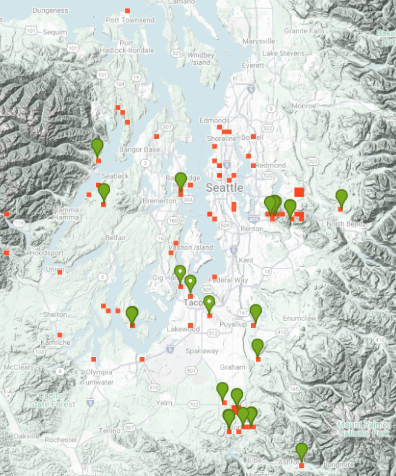

<div id="inatMap" class="basicDiv">
  <div style="border: 2px solid darkgray; border-radius: 10px;
              padding: 40px; padding-top: 0px;">

<h4>Where is it happening?</h4>

The die-off was first observed, and has been most studied, here at
Seward Park.

<p>But observations have come in from across the Puget Lowlands, as
  seen in the green and red markers in this iNaturalist map.
  The live map is seen
<a href="https://www.inaturalist.org/projects/western-sword-fern-decline-in-the-pacific-northwest"
   target="_blank">here</a>.
<p>
  

   

</div>
</div>
